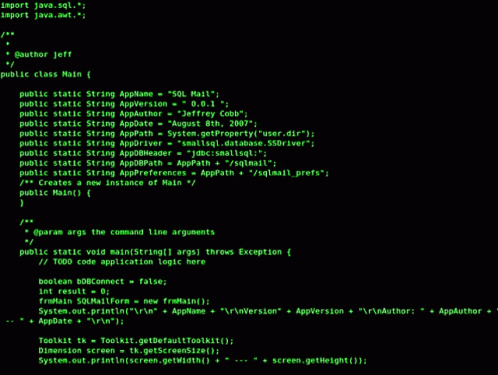

10 лучших IDE
Сложно представить процесс создания ПО без IDE. Предлагаем рассмотреть актуальные онлайн-среды разработки, которые могут вам понравиться.

IDE (Integrated Development Environment) – это интегрированная, единая среда разработки, которая используется разработчиками для создания различного программного обеспечения. IDE представляет собой комплекс из нескольких инструментов, а именно: текстового редактора, компилятора либо интерпретатора, средств автоматизации сборки и отладчика. Помимо этого, IDE может содержать инструменты для интеграции с системами управления версиями и другие полезные утилиты. Есть IDE, которые предназначены для работы только с одним языком программирования, однако большинство современных IDE позволяет работать сразу с несколькими.
Чем IDE отличается от текстового редактора?
IDE представляет собой более сложный инструмент, чем обычный текстовый редактор. Несмотря на то что в текстовых редакторах есть масса полезных функций вроде подсветки синтаксиса, единственная их задача – обеспечивать работу с кодом. То есть для полноценной разработки вам понадобится еще хотя бы компилятор и отладчик. IDE уже содержит в себе все эти и другие полезные компоненты. По сути, термин IDE обозначает то, что у вас под рукой будет все, что необходимо для разработки приложений и программ. Какая среда разработки подойдет конкретно для вас? В этом вопросе надо основываться на четырех факторах:Язык разработки
Простота использования
На каких платформах работает